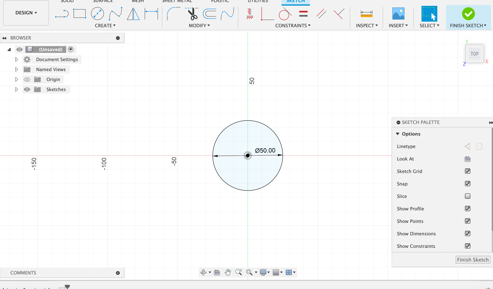
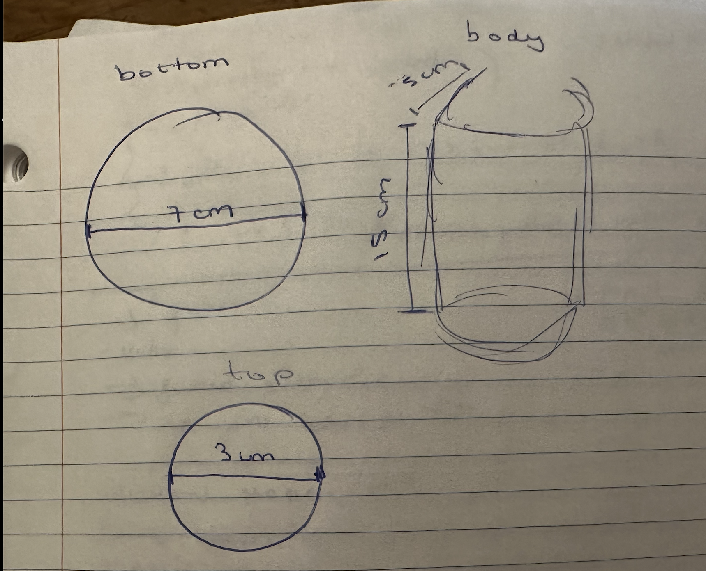
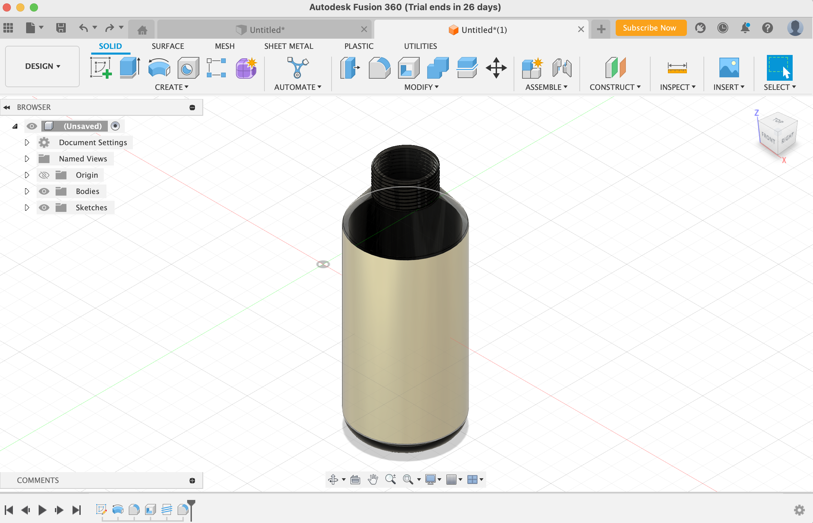
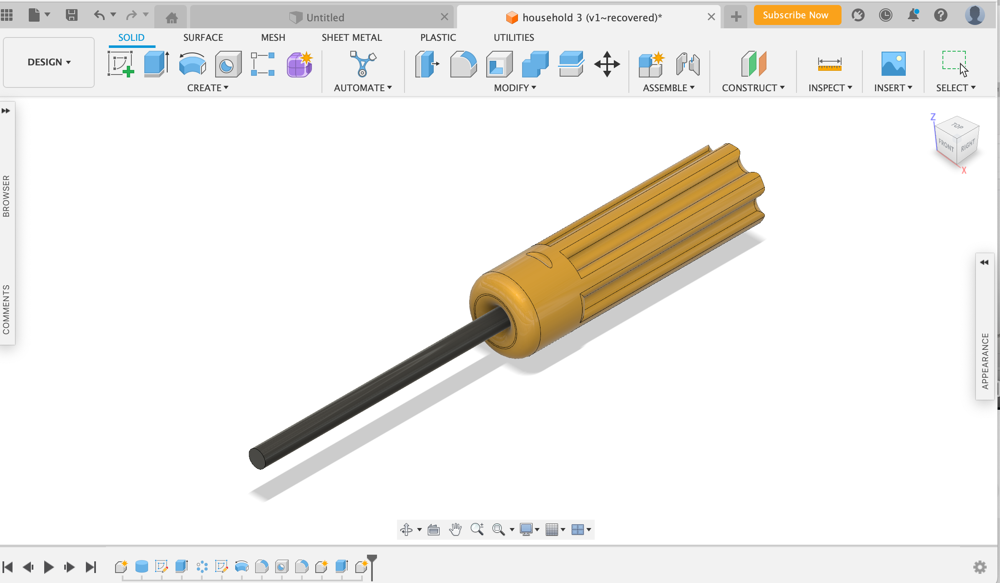

Assignment
This week assignment we had to create a press-fit construction kit tha could be assemble in multiple ways accounting for the use of the lasercutter kerf. Furthermore, we had to select 2 household objects or components from the lab and model them in CAD.
Press-Fit Construction Kit
Materials Used
Cardboard, Calipers, Fusion 360, and Inkscape Software
Introduction
I decided to do my press-fit construction kit of wheels that could be assembled together to sort of do a prototype that ended up looking like a sort of drone. To be really honest, I didnt had a specific shape I wanted to lassercut, but ended up with a circle with several notches by being inspired by other designs in google.
Using Fusion 360
Before I could even start designing, I really had to make sure that I did know how to use Fusion 360, and for that decided to watch several youtube videos here that served me as an inspirational source to come up with my ideal shape. After building my knwoledge with this program, started to build my shape. What I first did was to create a skecth, and chose the "top plane". Followed by this, draw a circle that had a diamter of 50mm.
Afterwards, proceed to divide my circle into eight evenly distribuited pieces by creating construction lines along the x and y axes by pressing " Control + L".

Once I had this, I offlined this traced lines by 1.9mm and mirror them. Finally, I extrude my shape and chose a thickness of 3.8 mm.

2. Using Inkscape + Laser Printing
Once I finished with my design and ensure it was as I wanted to be, I went ahead and exported the skecth to a DXF file. Then, imported the DXF file into Inkscape, where I changed the color of the lines from black to red so that it could be more visible. After this adjustments, exported this sketch to a PDF and opened it with adobe in the computer lcoated in the lab. I had to follow the instructions provided it in the wall as I didnt know how to use this new artifact, which took me more than expected. Here, I selected the number of pieces I wanted (in my case 10) and created it a grid of 5 x 2. Lastly, I selected the material "cardboard" and chose the thickness of the material, which was 3.8mm that I measured with the help of callipers. Printing time!!

Final Product
This is the final result of the pieces assembled. I would definetely say it took me around -5min to print my pieces. The wheels definetely proceeded to come the way that I expected and perfectly fit into each other on the second try!

Modelling Household Objects- Water Bottle
Materials
callipers, Water bottle, Fusion 360.
Introduction
I always carry my water bottle with me, and so thought it would be cool to sketched it in 2D.
1. Dimensions + Drawings
I started by drawing a schematic representation with all measures of the parts I wanted to include in my design. I followed the measurements of my actaul water bottle, and so I did the bottom with a diamter of 7cm and the top diameter of 3cm. For the body, it had a height of 15cm and the part that connects the height with the top, 5cm.
2. Building Procedure
For this, I began by making circles and then filleting the bottom part of the water bottle, and then created a hole in the top part to represent the water bottle being open. Then, I added some decorative elements. I went on and gave a glass material effect and then added gold and black as my main colors.
3. Final Product
This is my water bottle with all its feature included.
Moddelling Household Objects- Lab Screwdriver
Materials
callipers, screwdriver, fusion 360.
Introduction
This design idea came while I was waiting to use the lasercutter kerd. I was standing in there and found a screwdriver and surprisingly calipers, so I went ahead and proceed to do a 2D modelling.
1. Dimensions + Drawings
I started by drawing a schematic representation with all measures of the parts I wanted to include in my design after using callipers.

2. Building Procedure
I started by doing the body in the form of a cylinder, and then continue on to create the holder and eventually the screw. My screw driver was 5.5mmm. Below, I have attached a picture of how it is simmulated.
3. Final Product
Finally, I gave my screwdriver some color of yellow and black, and done!
